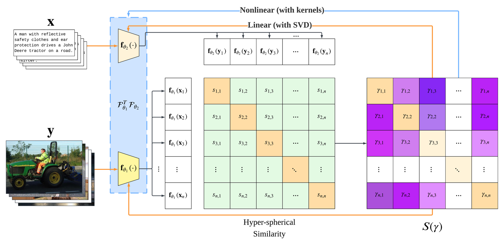
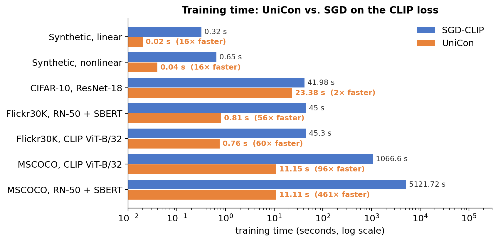
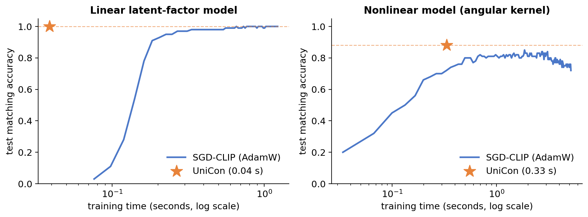
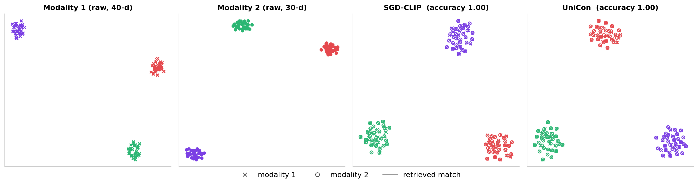
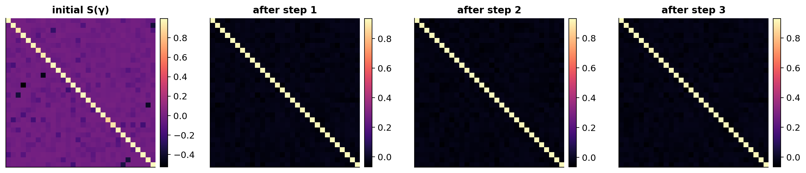

* Underlined names: equal contribution

Overview
One spectral characterization covers linear and kernel encoders, and every loss in the contrastive family.
The optimum is a best rank-r approximation. No backpropagation and no learning rate.
Linear encoders are the linear-kernel case of one RKHS spectral characterization.
CLIP / InfoNCE, triplet, sigmoid, and many-to-many alignment via \((\psi,\phi,\nu,\epsilon)\).
Seconds instead of hours on MSCOCO, with competitive or better retrieval.
Paper
Contrastive objectives power state-of-the-art multimodal models, but their training remains slow, relying on long stochastic optimization. We propose a Unified Framework for Efficient Contrastive Alignment via Kernels (UniCon), which spans linear and nonlinear encoders as well as one-to-one and many-to-many alignments. At its core, UniCon introduces the contrastive similarity weight matrix \(S(\gamma)\), which enables closed-form global solutions that provably replace minibatch back-propagation with exact updates. Through the lens of reproducing kernel Hilbert spaces (RKHS), UniCon provides a kernelized perspective that unifies contrastive alignment and reveals its connection to spectral methods. To validate the theory, we conduct experiments on synthetic, unimodal, multimodal, and zero-shot tasks, demonstrating that UniCon achieves substantial efficiency gains while preserving generality and strong empirical performance.
Approach
Similarity, then \(S(\gamma)\), then one spectral update. The fixed point settles in a couple of steps.
CLIP, InfoNCE, triplet, and SupCon-style losses are instances of one family, set by \(\psi,\phi\), the positive weight \(\nu\), and pair weights \(\epsilon_{ij}\).
Its gradient equals that of a trace objective weighted by \(S(\gamma)\): positive pairs are pulled, negatives are pushed.
The trace objective is maximized by a best rank-r approximation, in the ambient space or in an RKHS.
For a batch with hyperspherical similarities \(s_{ij} = \langle f_{\theta_1}(x_i), f_{\theta_2}(y_j)\rangle\) and positive sets \(P_x(i)\), \(P_y(j)\):
With the contrastive similarity weight matrix \(S(\gamma) = -\frac{1}{n}\sum_{i,j}\tfrac12\big(\tfrac{\gamma_{ij}}{|P_x(i)|}+\tfrac{\bar\gamma_{ji}}{|P_y(j)|}\big)e_ie_j^\top\),
Minimizing the contrastive loss is therefore maximizing \(\mathrm{tr}(F_{\theta_1}(X) S(\gamma) F_{\theta_2}(Y)^\top) - \tfrac{\rho}{2}\|\cdot\|_F^2\), whose maximizers are known in closed form:
Because \(S(\gamma)\) depends on the current encoders, UniCon alternates similarity → \(S(\gamma)\) → spectral update. Mini-batch solutions are fused with validation weights.
The method rests on two functions in unicon/core/s_gamma.py:
compute_S_gamma (one-to-one, Listing 1) and compute_S_gamma_generalized
(many-to-many, Listing 2). The solvers only add the SVD.
from unicon import compute_S_gamma, clip_loss, LinearUniCon, KernelUniCon S = compute_S_gamma(s, **clip_loss(tau=1.0).s_gamma_kwargs) # (n, n) contrastive similarity weights C = X.T @ S @ Y # weighted contrastive cross-covariance model = LinearUniCon(r=128).fit(X, Y, batch_size=4096, n_iters=2) # Algorithm 1 model = KernelUniCon(r=10, kernel="angular").fit(X, Y, batch_size=30) # Algorithm 2
Experiments
Closed-form alignment matches or beats SGD-CLIP, in seconds rather than hours.




| Backbone | Method | Train time | I→T R@1 | I→T R@10 | T→I R@1 | T→I R@10 |
|---|---|---|---|---|---|---|
| RN-18 + SBERT | SGD-CLIP | 45.6 s | .043 | .221 | .041 | .217 |
| UniCon | 1.7 s | .020 | .145 | .087 | .361 | |
| RN-50 + SBERT | SGD-CLIP | 45.0 s | .043 | .221 | .041 | .217 |
| UniCon | 0.81 s | .134 | .464 | .188 | .567 | |
| CLIP ViT-B/32 | SGD-CLIP | 45.3 s | .231 | .595 | .241 | .600 |
| UniCon | 0.76 s | .284 | .636 | .421 | .777 |
| Backbone | Method | Train time | I→T R@1 | I→T R@10 | T→I R@1 | T→I R@10 | Flickr30K R@5 (I→T / T→I) |
|---|---|---|---|---|---|---|---|
| RN-50 + SBERT | SGD-CLIP | 5121.72 s | .053 | .253 | .060 | .286 | — |
| UniCon | 11.11 s | .105 | .388 | .129 | .439 | .171 / .249 | |
| CLIP ViT-B/32 | SGD-CLIP | 1066.60 s | .128 | .415 | .123 | .427 | — |
| UniCon | 11.15 s | .329 | .685 | .292 | .644 | .808 / .766 |
All models are trained on MSCOCO. Flickr30K is evaluated without any adaptation. Highlighted rows are UniCon.
Cite
@inproceedings{sui2026unicon,
title = {UniCon: Unified Framework for Efficient Contrastive Alignment via Kernels},
author = {Sui, Hangke and Wang, Yuqing and Do, Minh N.},
booktitle = {Advances in Neural Information Processing Systems (NeurIPS)},
year = {2026}
}